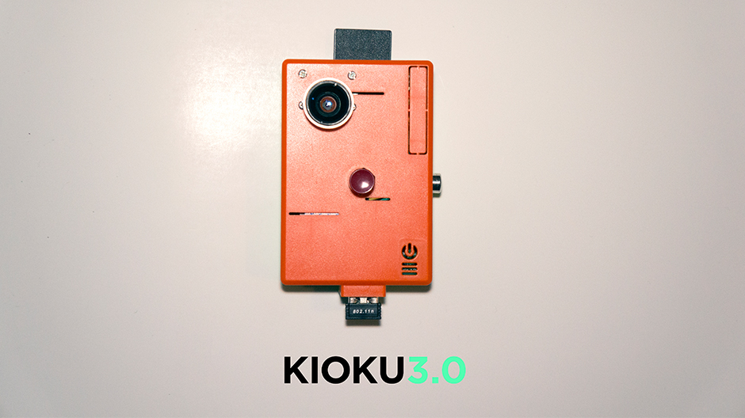
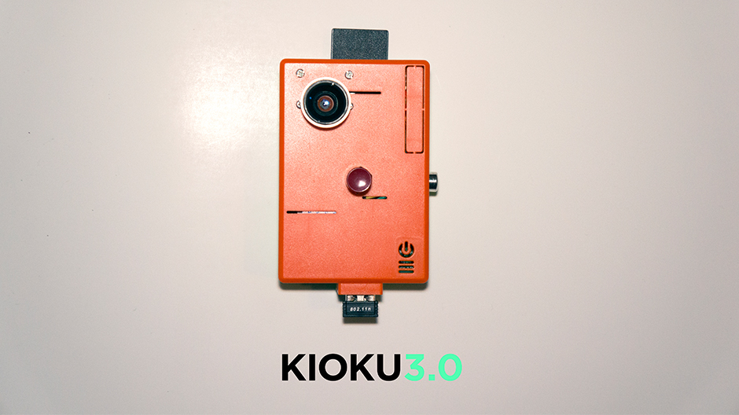

Problem: Develop a business concept that will be pitched to real investors after the projects end.
Insight: You don't know what you've missed until its gone. We often come across situations which we afterwards wish we could have saved or captured in some way. But always being prepared to record or snap a photo of something leaves you out of just enjoying that moment, being there.
Solution: Inspired by the black box of the aeroplane, Kioku is a wearable camera that lets you capture the moments you just forgot to save.
Kioku is based on the simplest of principles, it only has one button
Through memory buffer technology it always records the latest 15 minutes of your life. It keeps the content of those minutes in the internal memory and continuously erases everything older than the time limit. You decide when and what you want to save. When you realize something happened that is worth saving you just press ‘save’ and it transfers the buffered video clip to your phone via Bluetooth. In this way you have the ability to save what you just missed to actively record.
When the video is transferred to your phone you choose if you want to edit the video, share it amongst your friends in our community and other social media channels such as Twitter, Instagram, Facebook etc. or keep it in your private gallery.

 
